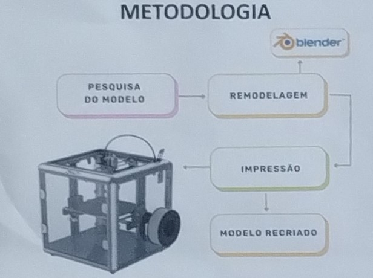
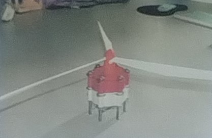
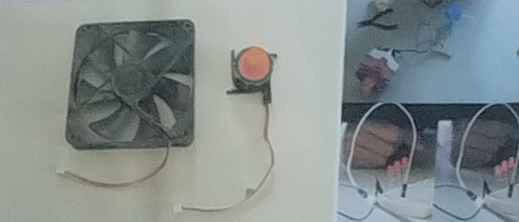

A UTILIZAÇÃO DA MODELAGEM E IMPRESSÃO 3D NO ENSINO DE TECNOLOGIA SUSTENTÁVEL
UMA RÉPLICA DE TURBINA EÓLICA PARA O ENSINO
Juan Alejandro da Silva¹; Julia Sieverdt Espinosa¹; Rodrigo Souza Banegas²; Renata Ogusucu³; Daniel Shikanai Kerr⁴ ¹juanalejandro1598@gmail.com ²juliaespinosa0602@gmail.com ³rodrigo.banegas@ifc.edu.br ⁴renata.ogusucu@ifc.edu.br ⁵daniel.kerr@ifc.edu.br
INTRODUÇÃO
Desde a antiguidade, o ser humano utiliza diversas fontes de energia, classificadas como renováveis e não-renováveis. As renováveis, como a energia eólica, são sustentáveis e utilizam o vento como "matéria prima". É relevante que a população conheça o funcionamento deste tipo de energia. A impressão 3D, facilita o aprendizado ao criar modelos tridimensionais que ajudam na compreensão de conceitos científicos e são inclusivos para pessoas com deficiência visual.
OBJETIVOS
Reproduzir uma turbina eólica como fonte de energia renovável Utilizar o modelo recriado para o processo de aprendizado e inclusão. METODOLOGIA

O modelo em que o estudo foi desenvolvido teve como base a turbina eólica disponível em: www.thingiverse.com/thing:1767153, representado pela Figura 01.
Figura 01 - Modelo de turbina eólica
.jpg)
https://www.thingiverse.com/thing:1767153
O modelo original foi alterado e modelado para retirar o motor e, consequentemente, acoplar um cooler de computador e um jogo de engrenagens orbitais, as quais aumentam a velocidade de rotação em quatro vezes, para melhor geração de energia. O jogo de engrenagens orbitais e a turbina modificada estão demonstrados na Figura 02.
Figura 02 - Engrenagem em orbitais e modelo de turbina modificada


O cooler utilizado e a produção de energia pelo funcionamento de lâmpadas LEDs estão reproduzidos na Figura 03.
Figura 03 - Cooler utilizado e funcionamento de lâmpadas LEDs.

REFERENCIAS
BANEGAS, Rodrigo; KERR, Daniel; DOUSUCU, Renata. O uso da impressão 3D na aplicação da robótica educacional: jogos digitais educacionais como ferramenta de ensino e aprendizagem. In: Congresso Brasileiro de Informática na Educação (CBIE). 2024.
GOLDENBERG, LUCON, Oswaldo. Energia, meio ambiente e desenvolvimento. Estudos Avançados, SP, v. 21, n. 59, p. 7-20, 2007.
NASCIMENTO, Raphael. Fontes alternativas e renovaveis de energia no Brasil: metódos e benfecis ambientais, universidade do vale do paraiba, maringa, 2016 disponivel em http://www.inicepg.univap.br/cd/INIC_2016/anais/arquivos/0859_1146_01.pdf acesso em 13 mar. 2023